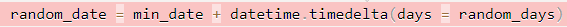
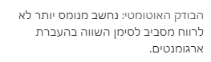

על השורה הבאה:

מקבל התראה על הריווח:

אפשר לראות שיש רווחים סביב כל הסימנים, אז למה יש לי הערה?
“לא לרווח” - אם אני מבינה נכון, מרווחים סביב סימן השיוויון בהשמה, אבל לא בהעברת ארגומנט
2 לייקים
לא שמתי לב שרשמו לא, תודה!
שלום ים,
מכיוון שהכתיבה ב JUPYTER איננה זהה לכתיבה ב IDE ששם ההערות מוצגות במקום ומיד, הערות הבודק האוטומטי מוצגות רק לאחר הגשת התרגיל וכניסה להצץ הדבר מעיק ומסרבל את התהליך. האים ישנה אפשרות להציג בצבע אחר או לקבל הודעה שיש הערות של הבודק האוטומטי עבור תרגילים? במקרה של השבוע (5) הייתי צריך לעבור על כל התרגילים (19) שהגשתי וזה מאוד מעיק/מסורבל.
תצטרך להתאמץ קצת עד שנעבור לשימוש ב־IDE בעוד כ־3 שבועות 
כרגע לצוות אין זמן להתעסק במערכת התרגילים, אבל רשמנו לעצמנו
אני חושב שמערכת התרגילים שווה את ההשקעה מכיוון שהינה האינטראקציה העיקרית בין התלמידים לצוות,
וכמו שאתה רוצה לחסוך לצוות שלך זמן, אנא חסוך גם בשלנו
נשמע שאתה נלהב בנוגע להשקעת הזמן הזה. לצערי אין לי אותו.
למרבה המזל, המערכת מפורסמת בקוד פתוח. תוכל להוסיף לה את הקוד שעושה זאת ואדאג לעדכן את המערכת –
2 לייקים
@uazoulay אם אתה באמת עושה את זה, אז הצעה שלי (לא יודעת איך אבל זה מרגיש לי כמו אופציה הקלה יחסית) היא שתוסיף כפתור בעמוד שהרגע הגשת בו תרגיל (שיופיע אחרי הגשת התרגיל), שנותן לך לצפות בתרגיל שהגשת עכשיו, כמו שיש כפתור חזרה לרשימת התרגילים (בפועל הכפתור פשוט יקח אותך לקישור של התרגיל שהגשת - כאילו לחצת על ‘הצצה’ מתוך רשימת התרגילים), אפשר גם שזה אוטומטית ינתב אותך לשם, אבל לא בהכרח כולם ירצו ולכן אני מציעה כפתור.
זה יעבוד אבל רק בהנחה שמגישים כל פעם רק תרגיל אחד (ואז צריך גם שהמערכת תזהה איזה תרגיל הועלה כי הרי מעלים מחברת שלמה - אולי אפשר שהיא תיקח את מספר התרגיל מתוך השורה של ה-upload, לא הסתכלתי על הקוד הנוכחי אבל זה בהכרח עושה את זה איפשהו אז תוכל להיעזר במה שכבר כתבו כדי למצוא את זה).
אגב, זה גורם לי לחשוב על זה שבסוף הקורס הרבה תלמידים יחפשו פרויקטים כדי לתרגל פייתון, אז אולי אפשר שהפרויקטים האלה יהיו קשורים בלעזור לשפר את המערכות לקורסים הבאים. זה יהיה אתגר מגניב ואולי יצאו מתוך זה דברים מוצלחים שבאמת ירצו להשתמש בהם.
לייק 1
מה בדבר הערות מהסגנון הזה? -
{kind=link}
לפעמים אני מתאים את מיקום ההערות לדבר שהן מתייחסות אליו בשורה מתחת, ולהזחה אין מקום.
(בכלל, שאלת תם: מה הסיפור עם הזחת הערות?)
תחשוב איזה “מכוער” זה שיש לך תיעוד “באמצע החיים”
זה אומר שהקוד שלך לא ברור, ועל מנת לסדר אותו ולייפות אותו - ניתן לעשות זאת באמצעות משתנים.
תגדיר משתנה amount, ומשתנה price במקרה זה במקום לכתוב תיעוד כזה.
כדי לא לייצר חוסר קריאות של השורת קוד ברגע שההערה גם רשומה באותה שורה.
הרווח ממש עוזר לזה להראות שתי יישויות נפרדות אני דווקא ממש אוהב את זה
def random_date(d1, d2):
d1 = d1.split(’-’)
d2 = d2.split(’-’)
d1 = datetime.date(int(d1[0]), int(d1[1]), int(d1[2]))
d2 = datetime.date(int(d2[0]), int(d2[1]), int(d2[2]))
days_between = (d2 - d1).days
date = d1 + datetime.timedelta(days=random.randint(0, days_between))
return date
אני מקבל בשורה של date= את ההערה הבאה:
הבודק האוטומטי: שם המשתנה שמופיע פה לא הוגדר. אם הוא כן הוגדר בתאים אחרים במחברת, הוסיפו אותו לתא כדי שהבודק יוכל להתייחס לפתרון שלכם.
אשמח להבין איזה משתנה לא מוגדר? ניסיתי אפילו להוסיף הגדרה של כל המשתנים ששם אבל ההערה עדיין נשארת.
כנראה שייבוא הספריה datetime לא מופיע בתא הזה
יש import שלה מעל הכל, הרי זה עובד…
אופציה נוספת - שאין ייבוא של random. אם זה עדיין לא זה נסה לעשות restart kernel ולהריץ ולבדוק אם התא עובד או שהוא צועק על זה שיש משתנה שהוא לא מכיר
מעולה! תודה! אכן זאת היתה הבעיה
היי!
בהעלאת התרגיל ‘חזרת’ מקבלת מהבודק האוטומטי את השגיאה הבאה:
{kind=link}
בהרצה במחברת לא קופצת שום שגיאה…
מה פשר?
איך לתקן?
תודה מראש לעוזרות והעוזרים 
נתלקתי במישהו עם שגיאה כזאת באחת הקבוצות. האם העברת רשימה לפונקציה או משהו אחר?
השאלה שלך פתרה לי את הבעיה תודה!